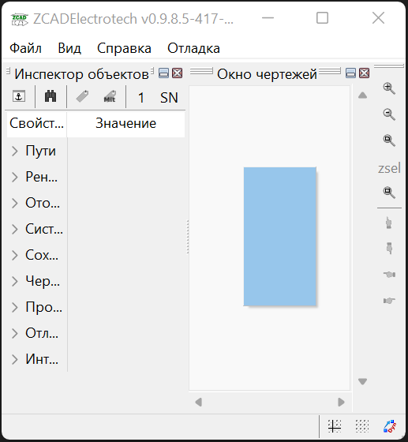

1. Общая информация
ZCAD - программа (далее по тексту - программа) с открытым исходным кодом, разрабатывается на языке Pascal с использованием IDE Lazarus и компилятора Free Pascal.
Автор - Андрей Зубарев (далее по тексту - автор) адрес электронной почты zamtmn@yandex.ru
Участник - Владимир Бодров
Участник - Владимир Абрамов адрес электронной почты vl-sx@yandex.ru
Есть два варианта сборки программы:
ZCAD - базовый набор CAD инструментов; ZCADElectrotech - набор расширеннвй инструментами для электротехнического проектирования
1.1. Лицензия
ZCAD - это программное обеспечение с открытым исходным кодом. Вы можете получить исходный код, а также разрешается копировать, перераспределять и изменять его в соответствии с условиями лицензии LGPL2 с исключениями. Для получения дополнительной информации, в том числе о доступности исходного кода, посетите страницу программы https://github.com/zamtmn/zcad или обратитесь к автору.
1.2. Отказ от ответственности
В соответствии с действующим законодательством, автор отказывается от каких-либо заверений и гарантий, предоставление которых может иным образом подразумеваться, и отказывается от ответственности в отношении программы, поставляемой вместе с программой информации и их использования.
-
Поставляемой вместе с программой информации предназначена для свободного ознакомления пользователей с вопросами, которые могут представлять для них интерес.
-
Вся информация предоставляется в исходном виде, без гарантий полноты или своевременности, и без иных, явно выраженных или подразумеваемых гарантий. Использование программы и поставляемой вместе с программой информации осуществляется исключительно по вашему усмотрению и на ваш риск.
-
Автор прикладывает все усилия, чтобы обеспечить пользователей точной и достоверной информацией, но в то же время не исключает возможности возникновения ошибок.
-
ZCAD — это программа, работающая по принципу «как есть», без заключения каких-либо договорённостей или договоров между пользователями программы и автором, либо кем-то ещё, любым образом связанными с этим или родственными ему проектами, которые (договора и договоренности) могут стать предметом прямых претензий.
-
Автор не дает каких-либо заверений или гарантий в отношении программы, в том числе, без ограничения, в отношении своевременности, актуальности, точности, полноты, достоверности, доступности или соответствия для какой-либо конкретной цели, в отношении того, что: при использовании программы не возникнет ошибок, а также, что поставляемая вместе с программой информация не нарушает прав третьих лиц.
-
В соответствии с действующим законодательством, Автор отказывается от каких-либо заверений и гарантий, предоставление которых может иным образом подразумеваться, и ответственности в отношении программы. Ни при каких обстоятельствах автор не будет нести ответственности ни перед какой стороной за какой-либо прямой, непрямой, особый или иной косвенный ущерб в результате любого использования программа, даже если автор будет явно поставлен в известность о возможности такого ущерба.
-
Автор оставляет за собой право вносить изменения без уведомления о них пользователей.
-
Если в соответствии с действующими законами какие-либо условия будут признаны недействительными, остальные условия остаются в полной силе.
Используя ZCAD и информацию поставляемую вместе с программой, вы выражаете свое согласие с «Отказом от ответственности» и установленными Правилами и принимаете всю ответственность, которая может быть на вас возложена.
Автор в любое время вправе внести изменения в Правила, которые вступают в силу немедленно. Продолжение пользования программой после внесения изменений означает ваше автоматическое согласие на соблюдением новых правил.
2. Быстрый старт
2.1. Системные требования
Программа работает под управлением операционных системам Windows и Linux, на 32 разрядных и 64 разрядных процессорах. для работы программы требуется 4GB оперативной памяти
2.2. Установка
ZCAD не требует какой то процедуры устанавки на компьютер. Вы можете скачать дистрибутив программы с страницы https://github.com/zamtmn/zcad/releases, для использования достаточно разорхивировать полученный архив
2.3. Запуск
Исполняемый файл находится в подпапке соответствующей Вашей платформе в папке бистрибутива bin. Достаточно просто его запустить
3. Работа с программой
3.1. Интерфейс пользователя
3.1.1. Общий обзор
Интерфейс программы по умолчанию представлен на скриншоте:

Можно выделить следующие основные элементы:
Тут производится отображение и редактирование графической информации.
Навигация по чертежу осуществляется мышкой. Масштабировать чертеж можно вращая колесо мыши, если при этом нажать и удерживать клавишу shift коэффициент масштабирования будет меньше и точки временных привязок не будут сброшены. Панарамировать чертеж можно двигая мышь с нажатой средней кнопкой. Если при панарамировании удерживатьт клавишу control, будет осуществляться вращение камеры. Также для навигации доступны некоторые сочетаения клавиш !!NEEDLINK!!
Редактирование чертежа также производится курсором мыши, при этом его форма зависит от ожидаемого действия: перекрестие - указание точки на чертеже, прямоугольник - выбор графического примитива. Комбинация прямоукольника и перекрестия - можно как выбрать примитив, так и указать точку на чертеже.
Программа позволяет выбирать примитивы несколькими способами:
-
кликнув прямоугольником по примитиву - примитив будет добавлен к текущему набору выбора
-
рамкой выбора - при клике по пустой области чертежа начинает чертиться прямоугольная рамка выбора, при следующем клике построение рамки будет закончено. Рамка начерченая слева на прово называется
прямойи рисуется сплошными линиями с синей заливкой, справа на лево - называетсяобратнойи рисуется пунктирными линиями с зеленой заливкой. По завершению процедуры будут выбраны все примитивы полностью попавшие в прямую рамку или хотябы частично попавшие в обратную рамку. При черчении рамки чертеж можно масштабировать и панарамировать, если начальная точка при этом выйдет за границы экрана, рамка будет подрезана по экрану. Данное поведение можно изменить нажав и удерживая клавишуcontrolперед указанием второй точки рамки. О наличии и отсутствии подрезки можно судить по диагональным линиям рисуемой рамки.
Тут отображаются и редактируются свойства различных сущностей. По умолчанию в нем отображаются настройки программы, но в зависимости от ситуации могут отображаться например свойства выделенных примитивов или параметры запущеной команды.
На рис. Внешний вид окна программы в инспекторе отображаются настройки программы. Если в области отображения выделить несколько примитивов, инспектор примет примерно следующий вид:
Имена свойств доступных только для чтения отображаются серым цветом. Если выделенные примитивы имеют различные значения одноименных свойств, данные значения отображаются как "Разный". Если данные значения фактически отличаются, но изза настроек отображения !!NEEDLINK!! (округления) выглядят одинаково, данные значения помечаются знаком "≈".
При клике на значение свойства откроется строка редактирования и можно будет изменить значение свойства. Для некоторых свойств доступны специализированные редакторы, открывающиеся в отдельном окне по нажатию кнопки […]
Свойства примитивов структурированны следующим образом:

-
Обрабатывать примитивы- тут можно выбрать тип примитивов свойства которых отображаются в инспекторе, а нажатием кнопок[*]или[-]оставить только примитивы данного типа в текущем выборе или исключить их из текущего выбора -
Process variables- ЭКСПЕРИМЕНТАЛЬНО !!NEEDLINK!! управляет обработкой переменных, привязанных к примитивам.Only this ents- только переменные выбранных примитивов;Only related ents- только переменные связанных примитивов;All ents- обрабатываются переменные и примитивов из текущего выбора и связанных с ними примитивов -
Переменные- на этом уровне структуры будут отображены все доступные в соответствии с значением Process variables переменные. При отображении переменных свзанных примитивов возможна цветовая раскраска значений ЭКСПЕРИМЕНТАЛЬНО !!NEEDLINK!! -
Общие- тут перечисдены общие свойства примитивов: слой, цвет, вес и т.п. -
Геометрия- различные геометрические свойства: точки вставки, координаты, длины и т.п. -
Суммарно- некоторые свойства допускающие суммирование, например при выборе нескольких отрезков тут будет их суммарная длина. Здесь же в веткеFILTERбудут некоторые свойства допускающие фильтрацию, например можно кнопкой[*]оставить в текущем выборе тиолько примитивы лежащие на определенном слое.
Тут отображается различные сообщения по ходу работы программы. Информация о процессах, сообщения о ошибках, предупреждения, подсказки для пользователя и т.п.
Тут можно ввести имя команды, тем самым запустив ее, либо ввести координату точки на запрос уже выполняемой команды.
Поле ввода имеет подсказку меняющуюся по текущей ситуации. Когда программа ожидает ввода команды подсказка имеет вид Команда> и > когда ожидается координата. Также некоторые комманды имеют контекстнную подсказку, в которой можно выбрать мышью опции команды
Перечень доступных комманд приведен в Команды команда может быть введена как просто по имени, так с операндом. Операнд указывается в скобках после имени команды. Например ввод Load вызовет диалог открытия файла чертежа и последующую его загрузку. Ввод Load(D:\file.dxf) сразу вызовет загрузку файла D:\file.dxf. Парсинг операндов выполняется силами команды, поэтому синтаксис в разных командах отличается.
Координаты можно вводить как 2D, так и 3D, при этом 2D будут переведены в 3D подстановкой 0 в качестве координаты Z. Также можно вводить как абсолютные, так и относительные (относительно последней указанной точки) значения. Относительные координаты задаются указанием знака @ перед координатой X. Если включен режим трассировки !!NEEDLINK!! и имеется привязка к оси трассировки, можно указать точку введя расстояние от точки трассировки, отложенное по оси трассировки.
Например если в открытом чертеже на запрос Команда> ввести Line, затем 10,30, затем @1,2 будет построена линия с координатами (10,30)-(11,32)
Командная строка может быть отключена. !!NEEDLINK!! В режиме с выключеной командной строкой становятся доступны буквенные сочетания клавиш - с включенной нажатия букв обрабатываются командной строкой
Здесь отображаются координаты курсора и прогрессбары долгих процессов. Также есть быстрый доступ к кнопкам переключения различных режимов работы программы !!NEEDLINK!!
Здесь сгруппированы иконки различных комманд для их быстрого запуска. !!NEEDLINK!!
Могут отображаться в древовидном виде и в виде списка иконок. К каждому листу дерева или иконке списка может быть привяана произвольная команда, запускаемая при клике по элементу. Как правило это команды втавки устройств или блоков. Древовидные палитры дополнительно оснащены полем фильтра для быстрого нахождения элементов !!NEEDLINK!!
Навигаторы служат для быстрой навигации по чертежу, нахождению на нем тех или иных элементов. Представляют из себя настраиваимую древовидную структуру отображения данных. На данный момент в программе доступны навигаторы устройств, кабелей, стояков и примитивов !!NEEDLINK!!
3.1.2. AnchorDocking
ZCAD в своей работе использует библиотеку AnchorDocking !!NEEDLINK!! данная библиотека позволяет склеить (пристыковывать) различные окна в одно. На Внешний вид окна программы 1,2,3,7,8 являются отдельными окнами склеенными в одно окно. Пустое окно программы выглядит следующим образом:

По периметру окна расположены области для пристыковки панелей инструментов, в центре область пристыковки окон.
Панели инструментов
Включить панель инструментов можно командой ShowToolBar передав ей в качестве операнда имя панели инструментов (или в меню Вид/Показать окно/Панели инструментов). Например включаем панель View, по умолчанию она отображается в неприствкованном состоянии:

Для пристыковки панели начинаем ее перетаскивать за свободное место (не за заголовок!), при этом будет будет подсвечиваться предпологаемое новое место расположения панели. При подведении мышки к краю окна будет подсвечена область вдоль края, при отпускании кнопки мыши панель инструментов будет пристыкована .Стыковка панели инструментов
| Действие | Процесс | Результат |
|---|---|---|
Стыковка панели инструментов |

|

|
В пристыкованном состоянии панели инструментов имеют заголовок в виде двух полосок в начале панели, за этот заголовок панель можно передвигать вдоль края пристыковки и отствковывать, двойной клик по заголовку панели приведет к ее полному раскрытию. Закрыть панель инструментов можно только в отстыкованном состоянии
Окна
Включить окно программы можно командой Show передав ей в качестве операнда имя окна (или в меню Вид/Показать окно). Например включаем окно ObjectInspector, по умолчанию окно отображается в неприствкованном состоянии:

Не пристыкованные окна программы имеют два заголовка - стандартный и нестандартный. За стандартный окна можно только перемещать, за нестандартный - перемещать и пристыковывать. Стыковка окон осуществляется перетаскиванием окна на желаемое место стыковки, при этом область стыковки будет подсвечена.
| Действие | Процесс | Результат |
|---|---|---|
Стыковка первого окна |

|

|
Стыковка следующего окна справа от первого |

|

|
Стыковка следующего окна поверх второго |

|

|
В таблице приведены возможные варианты стыковки окон. Первое окно может быть пристыковано только в центр главного окна. Последующие окна могут быть пристыкованы с любой стороны от уже имеющихся, либо поверх них, при этом будет окна будут переключаться вкладками, как показано в третьей строке таблицы. При стыковке окон слева\справа\сверху\снизу между ними появляется разделительный сплитер которым можно регулировать размер окон.
В заголовке пристыкованных окон появляется дополнительная кнопка минимизации, которая позволяет свернуть окно в тонкий заголовок и разворачивать его при наведении мыши
При щелчке правой кнопкой мыши по любому разделительному сплитеру можно вызвать контекстное меню стыковки для настройки ее параметров.
Сохранить раскладку окон и тулбаров можно командой SaveLayout или в меню настройка\Сохранить разбивку окон поумолчанию
3.1.3. Навигаторы
Отдельно стоит рассмотреть элемент интерфейса - навигаторы. Навигатор представляет из себя полностью настраиваемую древовидную структуру отображающую определенные свойства определенных примитивов чертежа. Каждая строка в структуре навигатора - отдельный примитив. На данный момент доступны навигаторы устройств, кабелей и стояков
Настройка навигатора производится следующим образом:
Вызывает редактор описания ветвлений древовидной структуры навигатора
Включает-выключает использование в навигаторе "Главной функции" (Централизация)
Вызывает редактор скрипта фильтрации по типу примитивов см.Формат фильтра по типам примитивов
Вызывает редактор скрипта фильтрации по свойствам примитивов см.Формат фильтра по свойствам примитивов
Вызывает редактор скрипта настройки отображения дерева. Ветвление дерева зависит от (1. Кнопка настройки ветвлений древовидной структуры), в данном скрипте настраиваетя например количество столбцов и их заполнение. Данный скрипт выполняется при создании навигатора, при изменении скрипта выполняется пересоздание навигатора для применения изменений В общем случае скрипт выглядит так:
Оператор(Операнд[,Операнд,Операнд ...])Доступные типы операндов:
|
Строковой параметр - любой текст заключенный в апострофы |
|
Операторы могут разделяться точкой с запятой, запятой, пробелом, переводом строки. Доступны следующие операторы:
|
Задает количество столбцов в навигаторе, должна присутствовать 1 раз в начале скрипта |
|
Задает параметры столбцов, должна присутствовать для каждого столбца |
Примеры скриптов экспорта:
Два столбца Tree и Comment, содержимое переменной NMO_Name примитива в первом и статичная надпись 'Тут чтото тоже надо сделать' во втором
SetColumnsCount(2,0);
SetColumnParams(0,'Tree','@@[NMO_Name]','tmpGUIParamSave_NavDev_C0',1);
SetColumnParams(1,'Comment','Тут чтото тоже надо сделать','tmpGUIParamSave_NavDev_C1',1)Три столбца Tree Elevation и Text, с содержимым переменных RiserName, Elevation и Text примитивов
SetColumnsCount(3,0);
SetColumnParams(0,'Tree','@@[RiserName]','tmpGUIParamSave_NavRis_C0',1);
SetColumnParams(1,'Elevation','@@[Elevation]','tmpGUIParamSave_NavRis_C1',1);
SetColumnParams(2,'Text','@@[Text]','tmpGUIParamSave_NavRis_C2',1)Вызывает перестроение дерева в навигаторе. Обычно при изменениях на чертеже навигаторы обновляются автоматически, но могут быть ситуации когда требуется в ручную вызвать обновление навигатора
Количество и название кнопок зависит от (1. Кнопка настройки ветвлений древовидной структуры) нажатое или отжатое состояние показывает включен или нет данный узел в текущий момент. Узлы можно включать\выключать.
3.2. Примитивы
Основной формат файла хранения графических данных программы – DXF версии 2000, со следующими ограничениями:
-
Не поддерживается THICKNESS
-
Не поддерживаются листы, только МОДЕЛЬ
Перечень доступных примитивов:
| Примитив | ZCAD имя | DXF имя | Предаставляющая версия | Ограничения |
|---|---|---|---|---|
Точка |
Point |
POINT |
ZCAD |
|
Линия |
Line |
LINE |
ZCAD |
|
3D Полилиния |
3DPolyLine |
POLYLINE |
ZCAD |
Дуговые сегменты, тип линии |
Полилиния |
LWPolyline |
LWPOLYLINE |
ZCAD |
Сглаживание |
Сплайн |
Spline |
SPLINE |
ZCAD |
Экспериментально |
3D Фэйс |
3DFace |
3DFACE |
ZCAD |
|
Солид |
Solid |
SOLID |
ZCAD |
|
Дуга |
Arc |
ARC |
ZCAD |
|
Окружность |
Circle |
CIRCLE |
ZCAD |
|
Элипс |
Ellipse |
ELLIPSE |
ZCAD |
|
Текст |
Text |
TEXT |
ZCAD |
|
МТекст |
MText |
MTEXT |
ZCAD |
Коды форматирования |
Вставка блока |
BlockInsert |
INSERT |
ZCAD |
|
Устройство |
Device |
ZCAD |
||
Выровняный размер |
AlignedDimension |
DIMENSION |
ZCAD |
Экспериментально |
Повернутый размер |
RotatedDimension |
DIMENSION |
ZCAD |
Экспериментально |
Диаметральный размер |
DiametricDimension |
DIMENSION |
ZCAD |
Экспериментально |
Радиальный размер |
RadialDimension |
DIMENSION |
ZCAD |
Экспериментально |
Кабель |
Cable |
ZCADElectrotech |
||
Электрическая ывноска |
Leader |
ZCADElectrotech |
||
Трасса |
Net |
ZCADElectrotech |
||
Суперлиния |
SuperLine |
ZCADElectrotech |
Экспериментально |
Данный список будет расширен, но не до полного охвата примитивов DXF.
| Файлы, обработанные ZCAD, можно редактировать в AutoCAD (и других CAD программах) не применяя команды, очищающие расширенные данные примитивов. Если расширенные данные примитива будут разрушены, при последующей обработке файла ZCAD, он будет воспринят как стандартный примитив DXF, т.е. кабель станет просто полилинией, а устройство обычным блоком |
3.3. Команды
3DPoly About AddToOwner Arc BEdit BlockDefVarMan BlockPreViewExport BlockReplace BlockRotate BlockScale BlocksInBasePreViewExport BlocksList Cam_Reset Cancel ChangeProjType Circle Circle2 ClLayerOff ClLayerOn ClearFileHistory CloseDWG Colors CommandList Connection2Dot Copy CopyBase CopyClip CopyFromOwner CutClip DBaseAdd DBaseLink DBaseRename
3.3.1. DataExport
Команда: |
DataExport |
Пример использования: |
|
Команда экспорта параметров графических примитивов в внешний файл CSV. Команда применяет к всем примитивам
текущего чертежа фильтр типа примитивов, передавая на дальнейшую обработку тольк примитивы определенного
типа. Далее применяется фильтр свойств примитивов, оставляя только примитивы имеющие требуемве свойства.
Над прошедшими фильтрацию примитивами выполняется скрипт экспорта записывая требуемые параметры во внешний
файл
При запуске подсказка командной строки принимает вид:

Что позволяет выполнить в командной строке следующие действия:
Ожидание ввода имени файла или пустой строки. Можно ввести имя файла, введенное значение будет использовано вдальнейшем как файл по умолчанию. Пустой ввод не изменяет текущее значение файла по умолчанию. После ввода значения экспорт будет выполнен и команда завершится
Ожидание ввода значения фильтра примитивов по типу. см. Формат фильтра по типам примитивов
Ожидание ввода значения фильтра примитивов по параметрам. см. Формат фильтра по свойствам примитивов
Ожидание ввода скрипта выполняющего экспорт. см. Формат скрипта экспорта
Откроет диалог выбора файла, можно выбрать любой файл csv. Выбор файла сделает его файлом по умолчанию и также как (1) выполнит экспорт и завершит команду
Также все это можно сделать с помошью инспектора объектов, который при выполнении команды имеет вид:
Формат фильтра по типам примитивов
Данный фильтр позволяет включить в набор или исключить из набора для экспорта определенные типы примитивов. Включать\исключать примитивы можно как по имени, так и по маске. изначально в набор для обработки не включены никакие примитивы. Для добавления тип примитива джолжен быть добавлен и не должен быть исключен. Фильтр задается в текстовом виде и в общем случае выглядит так:
Оператор(Операнд)[;Оператор(Операнд)]Операторы могут разделяться точкой с запятой, запятой, пробелом, переводом строки. Доступны следующие операторы:
|
Включить типы примитивов по маске |
|
Включить тип примитивов по имени |
|
Исключить типы примитивов по маске |
|
Исключить тип примитивов по имени |
Все операторы в качестве операнда принимают строковой параметр заключенный в апострофы.
Примеры фильтров примитивов:
Включить в экспорт примитивы Cable и Device:
IncludeEntityName('Cable');
IncludeEntityName('Device')Включить в экспорт все типы примитивов:
IncludeEntityMask('*')Включить в экспорт примитивы PolyLine и Line:
IncludeEntityName('*Line') ExcludeEntityName('3DPolyLine')Формат фильтра по свойствам примитивов
Данный фильтр применяется последовательно к каждому примитиву прошедшему фильтрацию по типу. Фильтр задается в текстовом виде и в общем случае выглядит так:
Оператор(Операнд[,Операнд])[;Оператор(Операнд[,Операнд])]Операторы могут разделяться точкой с запятой, запятой, пробелом, переводом строки. Доступны следующие операторы:
|
Включить примитив в результат если операнд соответствует маске |
|
Включить примитив в результат в случае выполнения условия |
Условный операторы пока доступен только один:
|
Условие считается выполненным если текстовое значение операнда1 соответствует маске |
|
Объединение условий 1 и 2 по закону ИЛИ |
Доступные типы операндов:
|
Строковой параметр - любой текст заключенный в апострофы |
|
Возвращает значение параметра текущего примитива в виде строки |
Имена параметров для разных примитивов могут отличатся, в общем случае это параметры
доступные в инспекторе объектов для данного типа примитивов, в случае отсутствия у примитива данного параметра
возвращается пустая строка. Примерный перечень доступных параметров смотри в
https://github.com/zamtmn/zcad/blob/master/cad_source/zcad/gui/odjectinspector/uzcoiregistermultiproperties.pas
Примеры фильтров по свойствам примитивов:
Включить в результат только примитивы типа кабель, или примитивы с параметром 'Name' удовлетворяющим маске
'CABLE_*' (это блоки\устройства, т.к. только у них есть имя)
IncludeIfSame(
Or(SameMask(%%('Name'),'CABLE_*'),
SameMask(%%('EntityName'),'Cable'))
)Включить в результат только примитивы с параметром 'Name' удовлетворяющим маске 'EL_CABLE_*' (это блоки\устройства, т.к. только у них есть имя)
IncludeIfMask(%%('Name'),'EL_CABLE_*')Формат скрипта экспорта
Данный скрипт применяется последовательно к каждому примитиву прошедшему фильтрацию предидущими двумя. Скрипт задается в текстовом виде и в общем случае выглядит так:
Оператор(Операнд[,Операнд])[;Оператор(Операнд[,Операнд])]Операторы могут разделяться точкой с запятой, запятой, пробелом, переводом строки. Доступны следующие операторы:
|
записать строку операндов c разделителями в новую строку файла csv |
|
Выполнить оператор в случае выполнения условия |
Условный операторы пока доступен только один:
|
Условие считается выполненным если текстовое значение операнда1 соответствует маске |
Доступные типы операндов:
|
Строковой параметр - любой текст заключенный в апострофы |
|
Возвращает значение параметра текущего примитива в виде строки |
|
Возвращает значение переменной текущего примитива в виде строки |
Имена переменных могут быть любыми, в случае отсутствия у примитива данной переменной возвращается значение
'!!ERR(ИмяПеременной)!!'. Имена параметров для разных примитивов могут отличатся, в общем случае это параметры
доступные в инспекторе объектов для данного типа примитивов, в случае отсутствия у примитива данного параметра
возвращается пустая строка. Примерный перечень доступных параметров смотри в
https://github.com/zamtmn/zcad/blob/master/cad_source/zcad/gui/odjectinspector/uzcoiregistermultiproperties.pas
Примеры скриптов экспорта:
Если текущий примитив устройство, записываем в csv строку 'Device','NMO_Name',Значение переменной NMO_Name,'Position',Значение переменной Position
DoIf(
SameMask(%%('EntityName'),'Device'),
Export(%%('EntityName'),'NMO_Name',@@('NMO_Name'),'Position',@@('Position'))
)Если текущий примитив устройство, записываем в csv строку 'Device','NMO_Name',Значение переменной NMO_Name,'Power',Значение переменной Power
DoIf(
SameMask(%%('EntityName'),'Device'),
Export(%%('EntityName'),'NMO_Name',@@('NMO_Name'),'Power',@@('Power'))
)Если текущий примитив кабель, записываем в csv строку 'Cable','NMO_Name',Значение переменной NMO_Name,'AmountD',Значение переменной AmountD
DoIf(
SameMask(%%('EntityName'),'Cable'),
Export(%%('EntityName'),'NMO_Name',@@('NMO_Name'),'AmountD',@@('AmountD'))
)Если текущий примитив кабель, записываем в csv строку 'Cable','NMO_Name',Значение переменной NMO_Name,'CABLE_Segment',Значение переменной CABLE_Segment
DoIf(SameMask(%%('EntityName'),'Cable'),
Export(%%('EntityName'),
'NMO_Name',@@('NMO_Name'),
'CABLE_Segment',@@('CABLE_Segment'))
)3.3.2. DataImport
Команда: |
DataImport |
Операнды: |
Не обязательный. Путь и имя файла CSV |
Пример использования 1: |
|
Пример использования 2: |
|
Импорт данных примитивов из внешнего файла CSV. При вызове без параметров будет открыто окно выбора файла,
после выбора данные будут импортированы из соответствующего файла. Имя файла можно передать параметром, тогда
данные из файла будет импортированы сразу, без окна выбора. В составе строки параметра могут использоваться
макросы !!NEEDLINK!!.
Разделителем в CSV файле должна быть точка с запятой, файл должен состоять из строк следующей структуры:
ИмяПримитива |
Переменная1 |
Значение1 |
… |
… |
ПеременнаяN |
ЗначениеN |
Где ИмяПримитива - внутреннее имя примитива ZCAD, например DEVICE, CABLE и т.д.
Далее попарно идут Переменная - имя переменной, Значение - значение данной переменной. Причем все
переменные кроме последней являются идентифицирующими, последняя переменная - собственно импортируемое
значение
Например при импорте следующей строки:
DEVICE |
NMO_Name |
M1 |
Position |
10 |
Power |
1.5 |
Произойдет следующее: с текущего чертежа будут выбраны все устройства (примитивы DEVICE) среди них будут
отобраны имеющие имя M1 (переменная NMO_Name='M1') и позицию 10 (переменная Position=10) при наличии у
отобраных устройств переменной Power ей будет присвоено значение 1.5 Если переменной Power у устройства
нет с ним никаких действий произведено небудет.
dbgAppExplorer dbgMemSummary DeSelectAll DebClip DimAligned DimDiameter DimLinear DimRadius DimStyles Dist DockingOptions EL_AutoGen_Cable_Remove EL_Cable EM_SEPBUILD EM_SRBUILD El_CableMan El_Cable_Invert El_Cable_Join El_Cable_Legend El_Cable_RenN_0N El_Cable_Select El_ExternalKZ El_Find El_Leader El_Material_Legend El_Wire El_Wire Erase ExampleCreateLayer ExampleInsertDevice ExecuteFile ExportDevWithAxis ExportTextToCSV FindAllIntersections Get3DPoint Get3DPoint_DrawRect GetAV GetLength GetPoint GetRect GetVertexX GetVertexY GetVertexZ Help Import Insert Insert2 InsertLayersFromBase InsertTestTable InverseSelected KIP_CDBuild KIP_Cable_Mark KIP_LugTableBuild LD LayOff Layer Line LineOld LineTypes
3.3.3. Load
Команда: |
Load |
Иконка: |
|
Сочетания клавиш: |
Ctrl+O |
Операнды: |
Не обязательный. Путь и имя файла dxf |
Пример использования 1: |
|
Пример использования 2: |
|

Загрузка файла DXF. При вызове без параметров будет открыто окно выбора файла, после выбора будет открыт данный файл.
Имя файла можно передать параметром, тогда файл будет открыт сразу, без окна выбора. В составе строки параметра
могут использоваться макросы !!NEEDLINK!!, например команда Load($(ZCADAutoSaveFilePath)) приведет к загрузке файла
автосохранения
3.3.4. LoadActions
Команда: |
LoadActions |
Операнды: |
Обязательный. Путь и имя файла с описанием экшенов |
Пример использования: |
|
Загрузка файла описаний экшенов !!NEEDLINK!!. Загрузка обычно происходит на ранней стадии запуска программы,
поэтому команда обычно используется в скрипте $(ZCADPath)/components/stage0.cmd !!NEEDLINK!!.
3.3.5. LoadLayout
Команда: |
LoadLayout |
Операнды: |
Не обязательный. Имя файла раскладки окон и тулбаров |
Пример использования 1: |
|
Пример использования 2: |
|
Загрузка и применение файла раскладки окон !!NEEDLINK!!. При отсутствии операнда будет произведена загрузка файла раскладки поумолчанию !!NEEDLINK!!.
При отсутствии файла раскладки указанного поумолчанию будет загружен файл defaultlayout.xml
Файлы раскладки ищутся в папке $(ZCADPath)/components
3.3.6. LoadMenus
Команда: |
LoadMenus |
Операнды: |
Обязательный. Путь и имя файла с описанием меню |
Пример использования: |
|
Загрузка файла описаний меню !!NEEDLINK!!. Загрузка обычно происходит на ранней стадии запуска программы,
поэтому команда обычно используется в скрипте $(ZCADPath)/components/stage0.cmd !!NEEDLINK!!.
3.3.7. LoadPalettes
Команда: |
LoadPalettes |
Операнды: |
Обязательный. Путь и имя файла с описанием палитр |
Пример использования: |
|
Загрузка файла описаний палитр !!NEEDLINK!!. Загрузка обычно происходит на ранней стадии запуска программы,
поэтому команда обычно используется в скрипте $(ZCADPath)/components/stage0.cmd !!NEEDLINK!!.
3.3.8. LoadToolbars
Команда: |
LoadToolbars |
Операнды: |
Обязательный. Путь и имя файла с описанием тулбаров |
Пример использования: |
|
Загрузка файла описаний тулбаров !!NEEDLINK!!. Загрузка обычно происходит на ранней стадии запуска программы,
поэтому команда обычно используется в скрипте $(ZCADPath)/components/stage0.cmd !!NEEDLINK!!.
3.3.9. MatchProp
Команда: |
MatchProp |
Иконка: |
|
Пример использования: |
|

Перенос свойств примитива на другие примитивы. После запуска предлагается выбрать исходный примитив, чьи свойства будут взяты как исходные. После выбора в инспекторе объектов будут показаны опции команды

Далее предлагается выбрать целевые примитивы, свойства исходного примитива отмеченые в опциях будут присвоены целевым примитивам.
3.3.10. Merge
Команда: |
Merge |
Операнды: |
Обязательный. Путь и имя файла dxf |
Пример использования: |
|
Подгружает файл DXF в текущий чертеж. Повторные определения блоков игнорируются
3.3.11. MergeBlocks
Команда: |
MergeBlocks |
Операнды: |
Обязательный. Путь и имя DXF файла |
Пример использования: |
|
Подгружает файл DXF в библиотеку блоков !!NEEDLINK!!. Повторные определения блоков игнорируются !!NEEDLINK!!.
Загрузка обычно происходит на стадии запуска программы, поэтому команда обычно используется в скрипте
$(ZCADPath)/components/autorun.cmd !!NEEDLINK!!.
3.3.12. Mirror
Команда: |
Mirror |
Иконка: |
|
Предвыбор примитивов: |
Требуется |
Пример использования: |
|
Зеркальное отражение выбраных примитивов относительно прямой. Исходные примитивы нужно выбрать до запуска команды. После запуска требуется указать 2 точки лежащие на прямой относительно которой будет произветено отражение. Во время указания прямой в инспекторе объектов можно указать действие над исходными примитивами - удалить или отавить в чертеже
3.3.13. Move
Команда: |
Move |
Иконка: |
|
Сочетания клавиш: |
Ctrl+ALT+M; M |
Предвыбор примитивов: |
Требуется |
Пример использования: |
|

Перенос выбраных примитивов. Исходные примитивы нужно выбрать до запуска команды. После запуска требуется указать 2 точки вектора на который будет произветен перенос.
MultiObjVarMan MultiSelect2ObjIbsp NavSelectSubNodes NewDWG NextDrawing NumDevices OPS_SPBuild OPS_Sensor_Mark ObjInspCopyToClip ObjVarMan OnDrawingEd Options OrtoDevPlace Pan PasteClip PlaceAllBlocks PlaceSmokeDetectorOrto PolyDiv PolyEd PolyTest Polygon PrevDrawing Print ProfileBuild ProjectTree QSave Quit RaiseException ReadBlockLibrary RebuildTree Rectangle Redo Regen RegenZEnts Rotate RotateEnts SaveAs SaveLayout SaveOptions Scale SelMat SelObjChangeColorToCurrent SelObjChangeDimStyleToCurrent SelObjChangeLTypeToCurrent SelObjChangeLWToCurrent SelObjChangeLayerToCurrent SelObjChangeTStyleToCurrent SelSim SelectAll SelectFrame SelectObjectByAddres SelectOnMouseObjects SetObjInsp Show ShowPage ShowToolBar SnapProperties StoreFrustum Stretch Text TextStyles TreeStat Undo Units UnitsMan UpdatePO VarReport View Zoom ZoomWindow ft rt test
4. Настройка программы
4.1. Структура директорий
Общая структура директорий программы имеет вид:

Отдельно стоит рассмотреть содержимое директории components: